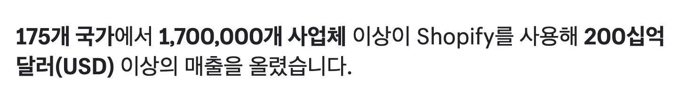
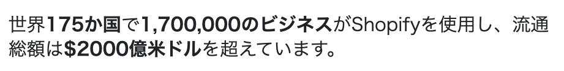
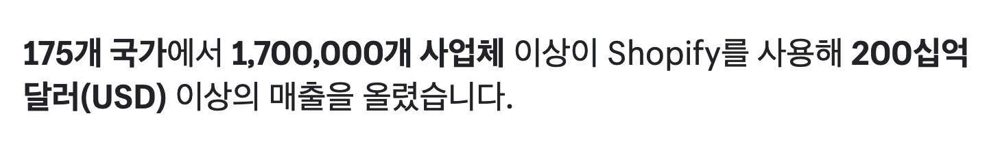
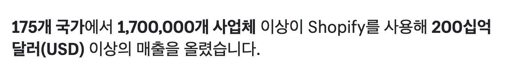

Internationalisation is the design and development of a product, application or document that enables easy localisation for target audiences that vary in culture, region, or language.
Domain? Locale? Language?
Language: A system of communication used by a particular country or community
Script: A visual representation of verbal speech
Domain: An easy-to-remember address used to access websites
Locale: A set of language- or country-based preferences for a user interface
The “Billion” problem
The Chinese numeral system (also used by Japanese and Korean) has specific words for large numbers as per the traditional Chinese grouping of 10,000.
Simp. Chinese
Trad. Chinese
Japanese
Korean
10
十 (shí)
十
十 (juu)
십 (ship)
100
百 (bǎi)
百
百 (hyaku)
백 (baek)
1000
千 (qiān)
千
千 (sen)
천 (cheon)
10,000
万 (wàn)
万
万 (man)
만 (man)
100,000,000
亿 (yì)
億
億 (ichioku)
억 (eok)
1,000,000,000,000*
兆 (zhào)
兆
兆 (icchou)
조 (jo)
What translators see
Not this:
But this:
Over %{total_stores} businesses in %{total_countries} countries around the world have made over $%{total_gmv_billions} billion USD in sales using Shopify
The end result

The problem
Saying that the GMV is 200 ten million dollars is quite a glaring grammatical error, if you speak the language.
But why didn't Japan have this problem? 🤯

The Japanese team had worked around this issue previously by editing the locale files that reference our total GMV numbers like so:
%{total_gmv_billions}0億米ドル
Our Japan team spotted this error and made the adjustment of replacing 十 with a 0.
See solution, steal it
This will be how it looks for each respective language:


 
